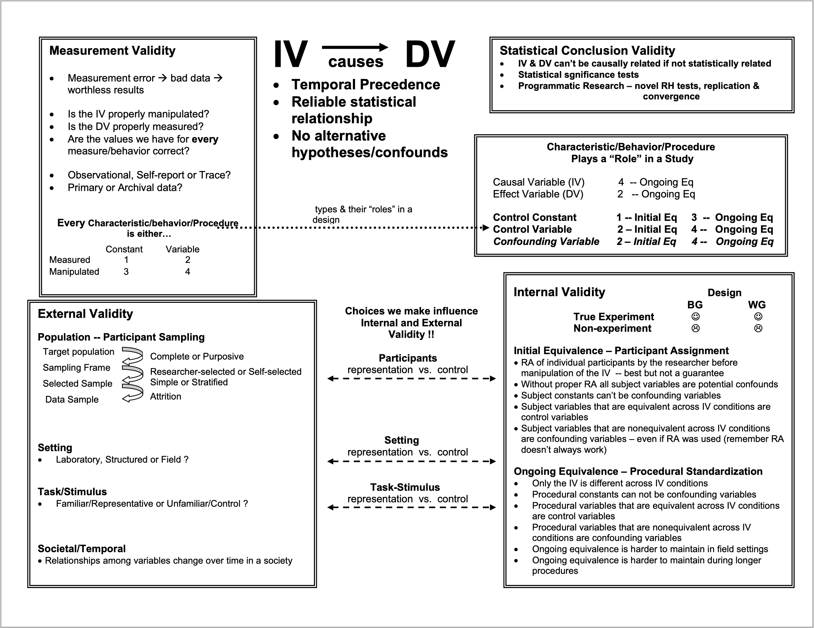
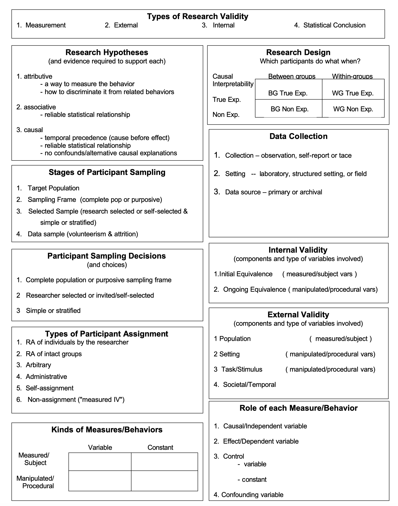

Reading, Writing & Critiquing Research
Lab 5
Today’s Tasks
- Wrapping up Lab 4 & 5
- Today’s lab:
- Reading & writing research reports (some things to think about as you read)
- Handouts: Contents of a research report, Validity Net, All the words
- Critique 1 – individual and class work
- Critique 2 - due next week
Questions?
Reading and Writing Research
Do this now!!
Download ALL the linked handouts and assignments from canvas
Experimental Design: The Basics
In general, an experiment is a procedure that researchers use to assess the effect of one variable (IV) on another variable (DV).
Independent variable (IV): In experiments, this is the variable that the researchers manipulate (e.g., randomly assigning participants to 2 different groups).
synonyms: Predictor variable, Explanatory variable.
Dependent variable (DV): In experiments, this is the variable of interest. This variable is expected to change according to the IV.
synonyms: Outcome variable, Response variable.
Control group or control condition: Baseline group. All other experimental groups are usually compared to this group.
synonyms: Comparison group, Placebo condition.
Variable types:
Continuous variables: Essentially numbers (e.g., 5.4).
Discrete variables: Gender, experimental condition (e.g., control VS treatment), Hair color, etc…
Ordinal variables: Olympic medal (Gold, Silver, Bronze)
Reading & Writing
Research Reports
Everything we do revolves around these 6 basic things
- What has the author(s) read that prompted the research?
- What is the purpose of the research being reported ?
- What is the specific research question or research hypothesis ?
- How was the research conducted ?
- who were the participants?
- what equipment and/or materials were used?
- what treatment & data collection procedures were used ?
- What are the results of the statistical analysis of the data as they relate to the research question or research hypothesis?
- How do the current findings integrate with what the author(s) read that prompted the research?
:::
Standardizing Research:
Enter APA
Everything we do revolves around these 6 basic things
- APA standardized style and formatting for journals (1928-present)
- Currently on APA 7th Ed.
- Three main components to style-guide:
- Content of the report
- how it is organized
- sections and labels
- Format of the report
- margins, citations, tables, etc.
- Style of the report
- language and terminology
Structure of an APA paper
50-120 word summary of the key information of study…
Review of the literature that prompted the research…
Participants: Who (what) and how they were selected
Materials: Equipment and materials used to collect data
Procedure: Treatment and data collection details
Description of the data analysis and results
Relating the findings to the previous literature, limitations & future directions
Citations of previous literature referred to in report
Title
The title should capture the intent/results of the study…
Example:
Abstract
50-120 word summary of the key information of study…
Introduction
Review of the literature that prompted the research…
Method
Participants
Who (what) and how they were selected
Materials
Equipment and materials used to collect data
Procedure
Treatment and data collection details
Results
Description of the data analysis and results
Discussion
Relating the findings to the previous literature, limitations & future directions
References
Citations of previous literature referred to in report
Introduction
- Background about the topic: What is the topic of the article? What research has been done on it?
- Gaps in the literature: What research is missing? What questions has not been explored?
- The current study: Why is the current study being done? What are the variables involved (IV and DV)? What are the hypotheses (if any)?
Method
Usually, the method section is divided into the following subsections:
- Participants: What is the demographic composition of the sample? How many participants are there?
- Materials: How were the variables measured? What are the values of the measured variable (e.g., “the possible values of the IV ranged from 0 to 100”)?
- Procedure: What was the experimental design? How did the experiment take place?
Results
- Remember that this is supposed to be a short presentation, so you should only report the most important statistics (i.e., the ones directly related to the main hypotheses).
- Make use of figures (e.g., bar charts) as much as possible . This always makes it so much easier to understand the results. Tables can also help.
- Explain what the statistics mean in plain English, do not just say “this results was significant”. Rather, say something like “so, this statistic tells use that group A had significantly better recall than group B.”
Discussion
The discussion is usually where the researchers briefly summarize the results and provide personal opinions about the study. The important points to identify are:
- Results Summary: Briefly recap the main findings.
- Interpretation and Implications: Were the main hypotheses supported? Why were certain results observed? What are the practical implications of the results?
- Limitations: What are some possible issues with the study?
- Future directions: What research should be done next?
Additional Sections
Tables, Figures, Etc.
Usually used to present data & analyses
Where to look for information scroll down
Do not rely on Abstracts!!
What has the author(s) read that prompted the research ?
Introduction, Discussion, References
What is the purpose of the research being reported ?
Abstract, Introduction, Discussion
What is the specific research question or research hypothesis ?
Abstract, Introduction, Results, Discussion
Who were the participants ?
Abstract, Method - Participants
What equipment and/or materials were used ?
Abstract, Method - Materials/Apparatus
What treatment & data collection procedures were used ?
Abstract, Method - Procedures
What are the results of the statistical analysis of the data as they relate to the research question or research hypothesis?
Abstract, Results, Discussion, Tables/Figures
How do the current findings integrate with what the author(s) read that prompted the research?
Abstract, Discussion
Elements of APA Style
Basic Rules:
- Double-space everything
- Have uniform margins of at least 1 in. at the top, bottom, right, and left of every page
- Write “formally” – without slang, contractions, etc.
- Use sentences and paragraphs (not “lists” unless hypotheses)
- Give credit to others for their ideas
Validity Net
All the Words
Research Critique Assignments
EXTRA CREDIT: Research Critique 1
Purpose: Practice identifying and evaluating each of these important parts of a research report.
- Step 1: Read (quickly-ish) the article
- Step 2: Identify basics and big take-aways (main purpose, key design, etc.)
- Step 3: Read (CAREFULLY) and take notes
Step 1: What is the research hypothesis.
Research Critique 1: What to look for
Hypotheses.
Look for all statements about the research hypothesis. Remember can be explicit or implied.External validity components.
What looks good? What raises red flags? What is unclear? Relate generalizability back to stated goals of study.Internal validity components.
What looks good? What raises red flags? What is unclear? Relate confounds or causal interpretation back to stated goals of study.Anything else of interest you find!
Review your annotations and brainstorm alternatives.
Make suggestions or identify gaps in knowledge, do not change the purpose, hypothesis, or overall design.
Remember!!
Your job is to critique the methods & procedures they used, not to design a whole new study!
How did it go?
Research Critique 2
Preparing you to critially read the 3 articles you selected for your final project and summarize them for use in your paper
- Part 1: Follow steps of Research Critique 1
- Part 2: Designing BRAND NEW studies
Tip
- Use the handouts!